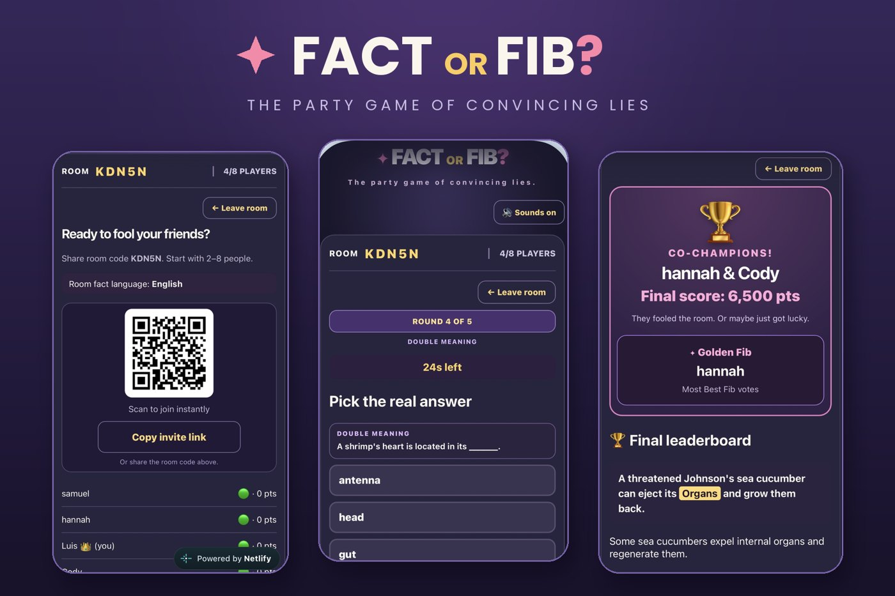

Each project below is traceable to a specific mentor, credential, or role, not a generic bullet.
Featured project
AnalyticsGoogle AdsGA4
MealCraft Kitchen: Cross-Channel Campaign Analysis
Case study for my AI for Marketing certification (UNC Charlotte): turned a meal-kit brand's Meta Ads, Google Ads and GA4 data into insight cards with hypotheses, budget moves (stop / scale / shift) and two follow-up tests each, with a primary and guardrail KPI.
Brand search3.2x
Diet-intent2.9x
Generic "meal kit"1.4x
Return on ad spend by search segment, Jan to Mar 2025 (case-study data)
Result: Found brand and diet-intent search returning 3.2x and 2.9x ROAS vs 1.4x for generic terms, and recommended shifting budget toward high-intent keywords.
MarketingSherwin-Williams
Dímelo Hispanic Pro Playbook
Built a bilingual customer-engagement playbook for Sherwin-Williams' Hispanic Pro segment from surveys, contractor interviews, and purchasing-behavior analysis.
Result: 2nd place, district presentation competition.
AIAutomationMake.com
AI Brand-Reputation Monitor
Built a Make.com automation that collects YouTube comments, batches them with an array aggregator, has OpenAI score sentiment and pull the top themes, and posts a monitoring update to Slack. Debugged the data mapping between modules until the summaries came through reliably.
Result: Working YouTube → OpenAI → Slack pipeline that replaces manual comment review.
AIProductBilingual

Fact or Fib: Multiplayer Party Game
Directed ChatGPT as my developer to build a real-time party game for 2 to 8 players in 24 hours. Fact-checked the AI, adapted the jokes into Latin American Spanish instead of translating word for word, wrote bug reports, and pivoted to Firebase security rules when my first setup failed twice. Players join by QR code or invite link, and it plays in English and Spanish.
Result: Live game, playtested with friends · Play it · Handshake showcase
MarketingBrandingADVC4020
YETI Product Rebranding Campaign for Sustainability
Group project (ADVC4020): a full rebrand strategy repositioning YETI around verifiable sustainability, with a brand audit, new positioning and brand elements, storyboard, and an integrated marketing communications plan, delivered as a narrated presentation. I analyzed YETI's current brand identity and developed the proposed new brand elements and the preliminary marketing program concept.
Result: Scored 98, 95 and 93.75 out of 100 across the three project phases.
SalesAptive Environmental
Sales & Account Growth
Managed 150+ accounts across two sales seasons, exceeding revenue targets while building durable customer relationships.
Result: $217K+ in revenue generated.
LeadershipJWU
Resident Assistant Leadership
Led community programming and day-to-day support for a residence hall, balancing individual student needs with hall-wide initiatives.
Result: 60+ residents led, 300+ students supported.
CoachingSoccer Genome
Individual Athlete Coaching
Built a consistent training plan for an athlete whose confidence, not his ability, was holding him back.
Result: Moved up to a higher competitive team.